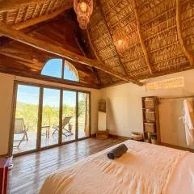
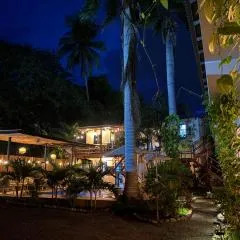
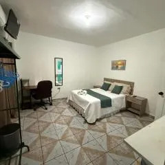
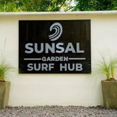
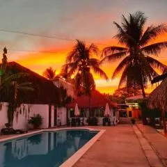
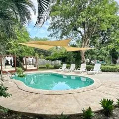

Encuentra el lugar perfecto para descansar cerca del mar

Seúl Haus está en El Sunzal, a pocos pasos de Playa el Majahual, y dispone de alojamiento con jardín, parking privado gratis y terraza.

Dos Palmas se encuentra en El Sunzal, a pocos pasos de Playa el Tunco, y ofrece jardín, habitaciones libres de humo, wifi gratis en todo el alojamiento y salón de uso común.

CTunco SurfHouse está en El Sunzal, a 5 min a pie de Playa el Sunzal, y dispone de alojamiento con jardín, parking privado gratis y salón de uso común.

SunSal Garden Surf Hub está en El Sunzal y cuenta con vistas al jardín, piscina al aire libre, jardín, zona de playa privada y terraza. El apartamento ofrece wifi y parking privado, ambos gratis.

Hotel Tunco Lodge dispone de piscina al aire libre, jardín, salón de uso común y terraza en La Libertad. El alojamiento, construido en 1986, está a 2 min a pie de Playa el Sunzal y a 39 km de Parque Bicentenario.

Hotel Zelen se encuentra en Tamanique, a pocos pasos de Playa el Tunco, y ofrece alojamiento con jardín, parking privado gratis, terraza y zona de barbacoa.
En temporada alta (diciembre–enero y Semana Santa) los hospedajes se agotan rápido. Se recomienda reservar con al menos 2 semanas de anticipación.
Muchos hospedajes pequeños solo aceptan efectivo. Los cajeros automáticos más cercanos están en La Libertad, a unos 10 minutos en carro.
Varios hostales ofrecen paquetes que incluyen hospedaje, tabla de surf y clases para principiantes a un precio combinado más económico.